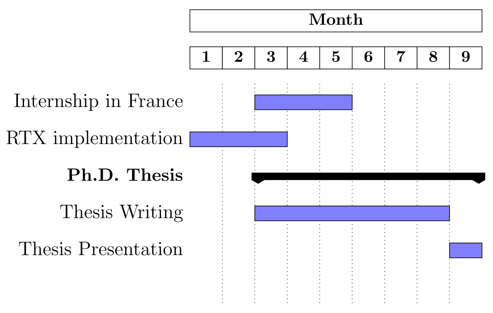

Exploring the potential of new GPU features for Convex Hull algorithm
Author
Roberto Carrasco
Supervisors
Nancy Hitschfeld, Cristobal Navarro, Hector Ferrada
Financed by


Developed by
University of
Outline
Introduction
What is convex hull?


My motivation
- Video Games
- Selfdriver
- Face recognition
- Robotic
- Data mining

Basic Concepts
Convexity
Convex Hull Algorithms
Preprocessing
Sign Area/Volumen
GPU Features
GPU Programming
Convexity
A subset S of the plane is called convex if and only if for any pair of points $p,q \in S$ the line segment $pq$ is completely contained in $S$.
Convex Hull Algorithms
- Naive
- Gift Wrapping
- Graham Scan
- Divide and Conquer
- Incremental
- Quickhull

Graham Scan
Convex Hull Algorithms
- Naive
- Gift Wrapping
- Graham Scan
- Divide and Conquer
- Incremental
- Quickhull

Gift Wrapping
Preprocessing
Sign Area/Volumen
2D
$\vec{a} \times \vec{b} =\begin{vmatrix} a_1 & a_2 &\\ b_1 & b_2 \end{vmatrix}\\ = (a_1b_2-a_2b_1) $
3D
$\vec{a} \times \vec{b} =\begin{vmatrix} i & j & k\\ a_1 & a_2 & a_3\\ b_1 & b_2 & b_3 \end{vmatrix}\\ = (a_2b_3-a_3b_2)i + (a_3b_1-a_1b_3)j+(a_1b_2-a_2b_1)k $

GPU Features
GPU Programming
Related Works
- CPU-based filtering technique
- Parallel convex hull algorithms
- GPU-based filtering techniques
CPU-based filtering technique
Héctor Ferrada, Cristóbal A. Navarro, and Nancy Hitschfeld. A filtering technique for fast convex hull construction in r2. Journal of Computational and Applied Mathematics, 364:112298, 2020.

Vaclav Skala, Michal Smolik, and Zuzana Majdisova. Reducing the number of points on the convex hull calculation using the polar space subdivision in e2. In 2016 29th SIBGRAPI Conference on Graphics, Patterns and Images (SIBGRAPI), pages 40-47, 2016.
Parallel convex hull algorithms
- Parallel Quick Hull [1]
- ParGeo: A Library for Parallel Computational Geometry [2]
- Randomized incremental algorithms [3]
- [1] S. Srungarapu, D. P. Reddy, K. Kothapalli, and P. J. Narayanan. Fast two dimensional convex hull on the gpu. In 2011 IEEE Workshops of International Conference on Advanced Information Networking and Applications, pages 7-12, 2011.
- [2] Wang, Y., Yu, S., Dhulipala, L., Gu, Y., & Shun, J. (2022, April). ParGeo: a library for parallel computational geometry. In Proceedings of the 27th ACM SIGPLAN Symposium on Principles and Practice of Parallel Programming (pp. 450-452).
- [3] Guy E. Blelloch, Yan Gu, Julian Shun, and Yihan Sun. Parallelism in randomized incremental algorithms. J. ACM, 67(5), sep 2020.
GPU-based filtering techniques
- Cudachpre2d [1]
- Cudachain [2]
- Cudahull [3]
- [1] Jiayu Qin, Gang Mei, Salvatore Cuomo, Guo Sixu, and Yixuan Li. Cudachpre2d: A straightforward preprocessing approach for accelerating 2d convex hull computations on the gpu. Concurrency and Computation Practice and Experience, 32, 04 2019.
- [2] Mei, G. CudaChain: an alternative algorithm for finding 2D convex hulls on the GPU. SpringerPlus 5, 696 (2016). https://doi.org/10.1186/s40064-016-2284-4
- [3] Ayal Stein, Eran Geva, and Jihad El-Sana. Cudahull: Fast parallel 3d convex hull on the gpu. Computers & Graphics, 36(4):265-271, 2012. Applications of Geometry Processing.
Problem statement
non-prepocessed
prepocessed
Algorithm
- Finding an approximate hull
- Extracting candidate points
- Computing the convex hull from the candidate points
1. Finding an approximate hull
- Polygon: Eight-side polygon -> 2D
- Polyhedron: Twenty-four-face polyhedron -> 3D
1.1 Two Dimension: Eight-side Polygon
Figure: The illustration depicts the eight-sided polygon formed by the four extreme points (red points) and four additional points C1-4 (green points)resulting from the first stage of the algorithm applied to a point cloud. Points colored in black are considered candidates for the hull, while those colored in gray are discarded in the filtering stage.
1.2 Three Dimension: Twenty-four-face Polyhedron

Figure: Illustration of randomly distributed points (1000 points) following a normal distribution, showcasing the polyhedron formed by the extreme and corner in red points.
2. Extracting Candidate Points
- Determine whether the point is a candidate
- Compacting the output array
3. Computing The Convex Hull From The Candidate Points
Publications
Published in
[1] Roberto Carrasco, Hector Ferrada, Cristobal A. Navarro, Nancy Hitschfeld, An evaluation of GPU filters for accelerating the 2D convex hull, Journal of Parallel and Distributed Computing, Volume 184, 2024, 104793, ISSN 0743-7315, https://doi.org/10.1016/j.jpdc.2023.104793.
Writting
[2] Roberto Carrasco, Hector Ferrada, Cristobal A. Navarro, Nancy Hitschfeld, GPU Preprocessing for Accelerating 3D Convex Hull Computation
[3] Sergio Salinas-Fernandez, Roberto Carrasco-Cavieres, Nancy Hitschfeld-Kahler, GPolylla: GPU-accelerated polygonal mesh generator
Hypotheses and goal
Hypotheses
- A parallel pre-processing technique can improve the state-of-the-art on GPU-based convex hull algorithms.
- The use of the new features of modern GPUs, such as tensor cores and ray tracing cores, can speed up the state-of-the-art GPU convex hull calculation.
Main objective
To build a parallel algorithms for accelerating convex hull problems over arbitrary point sets, efficient, robust, scalable, and satisfying correctness criteria
Specific objectives
- Review and identify the state-of-the-art convex hull algorithms and filtering techniques.
- Develop GPU pre-processing filtering techniques in two dimensions for convex hull and compare their efficiency with the state-of-the-art.
- Improve the state-of-the-art 3D filtering for convex hull algorithms both sequential and parallel and compare the performance of the new approaches with the state-of-the-art.
- Evaluate the contributions of the proposed algorithms in generating Delaunay triangulations and handling dynamic scenarios.
Advances and results related to each objective
Objective 1: Review and identify the state-of-the-art on convex hull algorithms and filtering techniques.
Objective 2: Develop GPU preprocessing filtering techniques in two dimensions for convex hull and compare their efficiency with the state-of-the-art.

Objective 2: Develop GPU preprocessing filtering techniques in two dimensions for convex hull and compare their efficiency with the state-of-the-art.
Distance Techniques Benchmark
Manhattan Distance:
$d = |x_i + y_i + z_i|$
Euclidean Distance:
$d = \sqrt{x_i^2 + y_i^2 + z_i^2}$

Figure: Performance of finding extreme points between Manhattan and Euclidean in logarithmic time
Objective 2: Develop GPU preprocessing filtering techniques in two dimensions for convex hull and compare their efficiency with the state-of-the-art.
Filtering Techniques Benchmark
Figure: Graphic representation of the distributions. The figure on the left side corresponds to a normal distribution with a mean of 1 and a standard deviation of 0.1. Next to it is a uniform distribution with a mean of 1 and a standard deviation of 0.1. Finally, the figure on the right is a circumference centered at the origin with a radius of 1.
Objective 2: Develop GPU preprocessing filtering techniques in two dimensions for convex hull and compare their efficiency with the state-of-the-art.
Our Variants
| Name | Programming | Step 1 | Step 2 | Architecture | # Points Supported |
|---|---|---|---|---|---|
| thrust_copy | Thrust | Min-Max element | Copy | GPU | $2^{30}$ |
| thrust_scan | Thrust | Min-Max element | Scan + Transformation | GPU | $2^{30}$ |
| cub_flagged | GPU | Min-Max Arg | Flagged | GPU | $2^{30}$ |
| gpu_scan | Kernel GPU | Reduction | Scan-based | GPU | $>2^{30}$ |
| omp_euclidean | OMP | Pragma Reduction | Pragma | CPU | $>2^{30}$ |
| omp_manhattan | OMP | Pragma Reduction | Pragma | CPU | $>2^{30}$ |
| cpu_euclidean | Sequential CPU | Sequential | $\emptyset$ | CPU | $>2^{30}$ |
| cpu_manhattan | Sequential CPU | Sequential | $\emptyset$ | CPU | $>2^{30}$ |
Objective 2: Develop GPU preprocessing filtering techniques in two dimensions for convex hull and compare their efficiency with the state-of-the-art.
Filtering Techniques Benchmark
Normal
Uniform
Circumference

Figure: Speedup filter over the cpu_euclidean filter.
Objective 2: Develop GPU preprocessing filtering techniques in two dimensions for convex hull and compare their efficiency with the state-of-the-art.
Filtering Techniques Benchmark
Normal
Uniform
Circumference

Figure: Speedup filter over the cpu_euclidean filter.
Objective 2: Develop GPU preprocessing filtering techniques in two dimensions for convex hull and compare their efficiency with the state-of-the-art.
Filtering Techniques Benchmark
Normal
Uniform
Circumference

Figure: Speedup filter over the cpu_euclidean filter.
Objective 2: Develop GPU preprocessing filtering techniques in two dimensions for convex hull and compare their efficiency with the state-of-the-art.
Filtering Techniques Benchmark
Normal
Uniform
Circumference

Figure: Speedup filter over the cpu_euclidean filter.
Objective 2: Develop GPU preprocessing filtering techniques in two dimensions for convex hull and compare their efficiency with the state-of-the-art.
Filtering Techniques Benchmark
Normal
Uniform
Circumference
Figure: Speedup filter over the cpu_euclidean filter.
Objective 2: Develop GPU preprocessing filtering techniques in two dimensions for convex hull and compare their efficiency with the state-of-the-art.
Filtering + Convex Hull Algorithm Benchmark
Competitors:
- CGAL:convex_hull_2
- CGAL:graham_andrew
- Qhull
- cudachain
Objective 2: Develop GPU preprocessing filtering techniques in two dimensions for convex hull and compare their efficiency with the state-of-the-art.
Filtering + Convex Hull Algorithm Benchmark
Normal
Uniform
Circumference

Figure: Speedup of our fastest filters + CGAL:convex_hull_2 over CGAL:convex_hull_2.
Objective 2: Develop GPU preprocessing filtering techniques in two dimensions for convex hull and compare their efficiency with the state-of-the-art.
Filtering + Convex Hull Algorithm Benchmark
Normal
Uniform
Circumference
Figure: Speedup of our fastest filters + CGAL:convex_hull_2 over CGAL:convex_hull_2.
Objective 2: Develop GPU preprocessing filtering techniques in two dimensions for convex hull and compare their efficiency with the state-of-the-art.
Filtering + Convex Hull Algorithm Benchmark
Normal
Uniform
Circumference
Figure: Speedup of our fastest filters + CGAL:convex_hull_2 over CGAL:convex_hull_2.
Objective 2: Develop GPU preprocessing filtering techniques in two dimensions for convex hull and compare their efficiency with the state-of-the-art.

Figure: The intermediate-case test with randomly selected displacement at different values.
Objective 2: Develop GPU preprocessing filtering techniques in two dimensions for convex hull and compare their efficiency with the state-of-the-art.
Filtering + Convex Hull Algorithm Benchmark

Figure: Speedup of the convex hull algorithm over CGAL:convex-hull-2 for a displaced circumference varying $\rho$ between [0, 0.3], and fixed size.
Objective 3: Improve the state-of-the-art on 3D filtering for convex hull algorithms both sequential and parallel and compare he performance of the new approaches with the state-of-the-art.

Objective 3: Improve the state-of-the-art on 3D filtering for convex hull algorithms both sequential and parallel and compare he performance of the new approaches with the state-of-the-art.

Figure: Illustration of the normal, uniform, and spherical distributions using randomly generated points in 3 dimensions.
Objective 3: Improve the state-of-the-art on 3D filtering for convex hull algorithms both sequential and parallel and compare he performance of the new approaches with the state-of-the-art.
Filtering Techniques Benchmark
Normal
Uniform
Sphere

Figure: Speedup of filters using Euclidean and Manhattan distances as metrics to find extreme points in normal, uniform, and spherical distributions.
Objective 3: Improve the state-of-the-art on 3D filtering for convex hull algorithms both sequential and parallel and compare he performance of the new approaches with the state-of-the-art.
Filtering + Convex Hull Algorithm Benchmark
Normal
Uniform
Sphere
Figure: Speedup to compute the convex hull using a preprocessing step, using the CGAL library for the hull computation, on normal, uniform, and spherical distributions
Objective 3: Improve the state-of-the-art on 3D filtering for convex hull algorithms both sequential and parallel and compare he performance of the new approaches with the state-of-the-art.
- Finding an approximate hull
Extracting the candidate points to hull <-- Ray Tracing... soon
- Computing the convex hull
Objective 4: Evaluate contributions of the proposed algorithms at generating Delaunay triangulations and handling dynamic scenarios.

- GPU polygonal meshing algorithm (GPolylla)
- $89 \times$ faster than CPU Polylla
Summary
- GPU preprocessing filtering techniques in two dimensions for convex hull
- thrust_copy
- thrust_scan
- cub_flagged
- gpu_scan
- omp_euclidean
- omp_manhattan
- cpu_euclidean
- cpu_manhattan
- GPU preprocessing filtering techniques in three dimensions for convex hull
- Manhattan distance
- Euclidean distance
- $160 \times$ with respect to 2D CGAL:convex-hull-2 function provided by CGAL.
- $795 \times$ with respect to 3D CGAL:convex-hull function provided by CGAL.
- Better scalability than the state-of-the-art.
- High acceleration potential with ray tracing.
Work plan
Sponsored by
Supported by
Hosted by